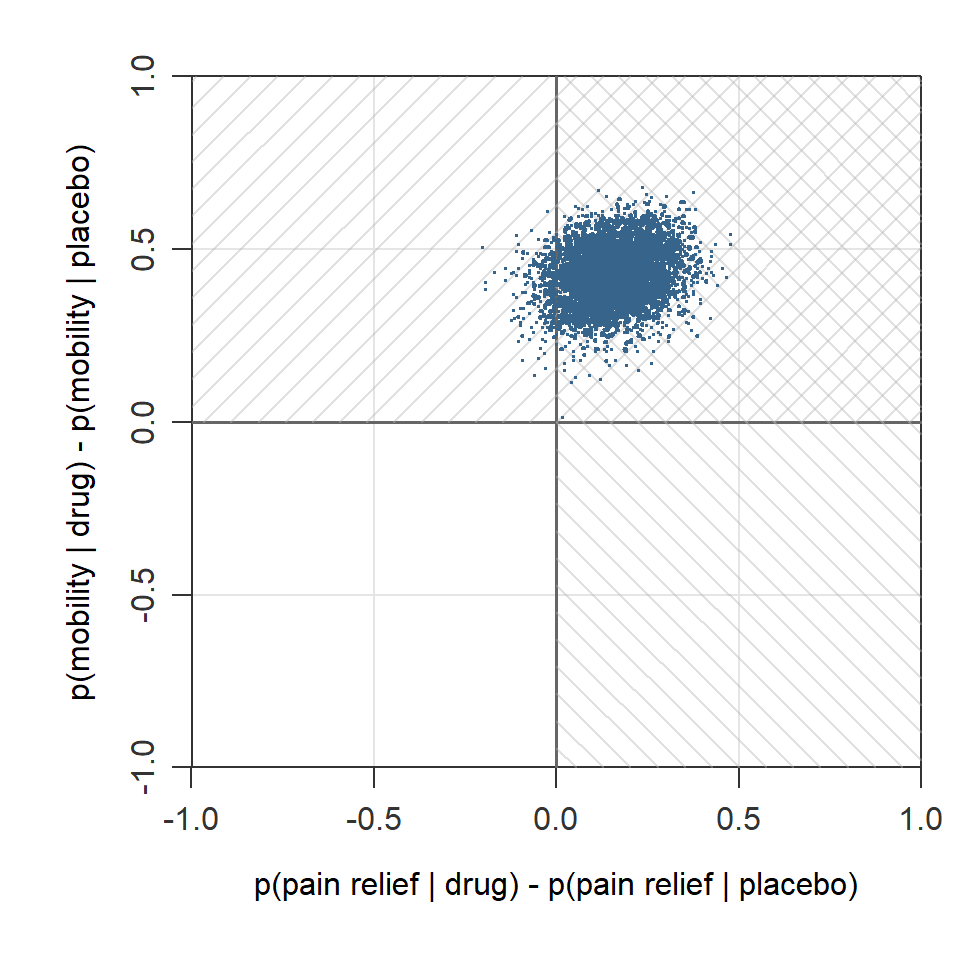

When binary outcomes move together: A Bayesian approach to multivariate analysis
Bayesian analysis
multivariate analysis
decision rules
subgroup analysis
multilevel analysis
bmco
Author
Xynthia Kavelaars
Published
April 21, 2026
Imagine you’re designing a study to test the effectiveness of a new treatment. Success isn’t just about symptom relief—you also care about quality of life (QoL). Or side effects. Or both.
So you measure two outcomes: symptom relief (yes/no) and quality of life improvement (yes/no). Now the question arises: What does “success” mean?
Must the treatment improve both outcomes? (All rule)
Or is improvement in just one enough? (Any rule)
Or can you weight them differently — maybe symptom relief matters 70%, QoL only 30%? Maybe a small negative effect on QoL is acceptable if symptom relief is large enough? (Compensatory rule)
When you measure two outcomes together, you want your analysis to reflect that relationship in the decision regarding superiority.
The challenge with standard approaches
Testing outcomes separately (symptom relief indpendently from QoL) invites complications:
Often outcomes are given a primary or secondary role in analysis and decision-making. But that is at least problematic when safety and effectivity are measured together. Safety is almost never of secondary concern, and neither is effectivity.
Decisions are often based on an ad hoc basis: Two decisions are combined into a single decision, without providing a probability statement on the combined decision, leaving the accuracy of the final decision less transparent.
Your two outcomes may be correlated: if the treatment relieves symptoms, it might as well improve quality of life too. Standard separate testing doesn’t easily account for this structure.
These methods do not always answer the most relevant question. The real question people care about:
“What is the probability that this treatment improves BOTH outcomes?”
Or: “At least one of the outcomes?” Or: “This weighted combination of outcomes?”
These are natural, practical questions, but they are not straightforward to answer with standard approaches - especially when outcomes differ in their relative contributions to success.
A direct approach: Joint modeling of binary outcomes
Here’s an elegant solution: Model both outcomes together in a single framework, account for their natural correlation, and use the posterior distribution to answer your specific question.
The bmco package in R implements this. It’s built on the principle that when you have multiple binary outcomes, analyzing them jointly — rather than piecing together separate tests - gives you more coherence.
Now, here’s the key question for this trial: What is the probability that the drug is better on a relevant combination of pain relief and mobility improvement?
With bmco, you get a direct answer:
result <-bmvb(data = trial_data,grp ="treatment",grp_a ="placebo",grp_b ="drug",y_vars =c("pain_relief", "mobility_improved"),rule ="All", # Drug must improve BOTH outcomestest ="right_sided",n_it =5000)print(result)
Multivariate Bernoulli Analysis
=================================
Group mean y1 mean y2
placebo 0.442 0.443
drug 0.596 0.865
n(placebo) = 50 n(drug) = 50
Posterior probability P(drug > placebo) [All rule]: 0.940
Use summary() for credible intervals and ESS.
Output for decision-making:
Posterior probability P(drug > placebo on BOTH outcomes): 0.94
If the standard superiority criterion of posterior probability > 0.95 (one-sided testing) is used, you would conclude that the treatment is better on both outcomes.
Why is this nice? The analysis relies upon a multivariate distribution and naturally respects the correlation between your outcomes. If pain relief and mobility are related, the model captures that. And you get a probability statement that can be used for superiority and inferiority decision with control of false positives (i.e., Type I error). The latter is convenient: When an uninformative prior is used, the posterior probability has a direct relationship to the p-value.
What makes this approach useful?
Behind the scenes, bmco fits a Bayesian multivariate model that:
Captures outcome correlations naturally: If pain relief and mobility improvement tend to go together (as they often do), the model learns this and uses that structure to give you more precise estimates.
Returns the posterior distribution directly: You get samples from the posterior, so you can ask any follow-up question - either on a single outcome or on multiple outcomes: P(drug better on both)? P(drug better on at least one)? P(weighted improvement > 0.10)? P(effect on pain > 0.20)?
Gives you the probability you actually care about: A direct posterior probability with a cutoff that corresponds to a prespecified Type I error rate available: “Given the data, what’s the probability of this scenario?”
The whole framework respects the basic structure of the problem: multiple related outcomes, a coherent treatment comparison, and flexible success criteria.
Three decision rules compared
Same data, different success criteria:
1. All Rule (Both outcomes must improve)
result_all <-bmvb(data = trial_data,grp ="treatment",grp_a ="placebo",grp_b ="drug",y_vars =c("pain_relief", "mobility_improved"),rule ="All",n_it =5000,return_samples =TRUE# For plot of sample)cat("P(drug > placebo on BOTH):", result_all$delta$pop)
P(drug > placebo on BOTH): 0.946
The plot below visualizes this posterior probability relative to the All rule. A large part of the posterior draws (94.6)% falls in the superiority region (marked area) of the All rule, which is characterized by a treatment difference above zero on both outcomes.
When to use: You need the treatment to be an all-rounder; no concessions permitted.
2. Any Rule (At least one outcome improves)
result_any <-bmvb(data = trial_data,grp ="treatment",grp_a ="placebo",grp_b ="drug",y_vars =c("pain_relief", "mobility_improved"),rule ="Any",n_it =5000,return_samples =TRUE)cat("P(drug > placebo on AT LEAST ONE):", result_any$delta$pop)
P(drug > placebo on AT LEAST ONE): 1
Below is another plot, this time to visualize the posterior probability relative to the Any rule. As indicated by the different directions of density lines, the rule is a combination of two superiority regions. Here all of the posterior draws (100%) fall in the superiority region.

When to use: You’re okay with a partially effective treatment. Useful when outcomes are substitutable (e.g., different ways to measure quality of life).
3. Compensatory Rule (Weighted outcomes)
result_comp <-bmvb(data = trial_data,grp ="treatment",grp_a ="placebo",grp_b ="drug",y_vars =c("pain_relief", "mobility_improved"),rule ="Comp",w =c(0.70, 0.30), # Pain relief is 70% of the story, mobility 30%n_it =5000,return_samples =TRUE)cat("P(weighted improvement):", result_comp$delta$pop)
P(weighted improvement): 0.999
In the next plot, the posterior probability relative to the Compensatory rule is shown. The marked area visualizes the superiority region for a Compensatory rule where the first outcome (pain relief) accounts for 70% of the decision and the other 30% is determined by the improvement in mobility. For this rule too, a large part of the posterior draws (99.9%) falls in the superiority region.
When to use: You have heterogeneous priorities. Pain relief matters most, but mobility counts too.
The key insight: With these three function calls, you’ve answered three different questions. Each one respects the data and the correlation structure.
Beyond the simple case: subgroups and clustering
Additional advantage comes when your data are more complex:
When treatments vary by patient type
Maybe your treatment works brilliantly in younger patients but poorly in elderly patients. The bglm() function extends the analysis to handle subgroup effects:
# Add age data trial_data_with_age <- trial_datatrial_data_with_age$age <-round(rnorm(100, 60, 8))# Does the drug improve BOTH outcomes in elderly patients (age 65+)?result_elderly <-bglm(data = trial_data_with_age,grp ="treatment",grp_a ="placebo",grp_b ="drug",x_var ="age",y_vars =c("pain_relief", "mobility_improved"),x_method ="Empirical",x_def =c(65, Inf), # Elderly patientsrule ="All",n_it =5000)cat("P(drug > placebo on BOTH | age 65+):", result_elderly$delta$pop)
P(drug > placebo on BOTH | age 65+): 0.635
While bmvb() relies on a multivariate Bernoulli distribution, subgroup analysis uses multivariate logistic regression under the hood to answer your multivariate question directly: What’s the posterior probability of superiority in the elderly subgroup?
When data are clustered
If you ran this trial across 20 hospitals (cluster-randomized), observations within hospitals aren’t independent. The bglmm() function handles random intercepts and slopes:
# Use in-built multilevel data trial_data_with_hospitals <- bglmm_datacolnames(trial_data_with_hospitals) <-c("hospital", "treatment", "age", "pain_relief", "mobility_improved")head(trial_data_with_hospitals)result_clustered <-bglmm(data = trial_data_with_hospitals,grp ="treatment", grp_a ="placebo",grp_b ="drug",id_var ="hospital", # Hospital as a random effectx_var ="age",y_vars =c("pain_relief", "mobility_improved"),rule ="All",n_burn =10000,n_it =20000# Takes some time; large number of iterations needed)cat("P(drug > placebo on BOTH | accounting for hospitals):", result_clustered$delta$pop)
Same multivariate logic; now it’s robust to the clustered structure.
When this approach is useful
In applied research, several things are typically true:
You care about multiple outcomes. The treatment affects different aspects of patient well-being, educational progress, quality of life — or any outcome your domain measures.
Those outcomes are often correlated. A good treatment usually helps on multiple fronts; a poor one hurts on multiple fronts.
You want a clear decision rule. Does this treatment meet our success criteria? And how confident are we?
The joint modeling approach handles all three naturally:
Flexible decision rules: All (conjunctive), Any (disjunctive), or Compensatory (weighted): Three different ways to capture relative importance of outcomes and to define “success” according to your contextual needs.
Efficient use of data: The correlation structure gets learned and used. You don’t lose information to assuming independence and may sometimes even end up with a lower sample size.
Interpretable results: Posterior probabilities statements produce coherent decisions with Type I error control.
Getting Started
Install from CRAN:
install.packages("bmco")
Then load the package and explore the vignettes. Here, more details on MCMC settings, prior choices, and other options are given.
library(bmco)vignette("Introduction to bmco")vignette("Subgroup Analysis with Multivariate Binary Outcomes")vignette("Subgroup Analysis with Multivariate Binary Outcomes in Multilevel Data")
Each vignette walks through realistic examples with full reproducible code.
Power analysis is available in the bmco-pwr Shiny app for basic multivariate Bernoulli analysis using bmvb() and subgroup analysis via bglm().
Quick Reference
Analysis
Scenario
Function
When to Use
Basic multivariate Bernoulli
Simple comparison, no covariates
bmvb()
Randomized trial, full sample analysis
Subgroup analysis
Treatment varies by patient type
bglm()
Age-stratified, severity-based, or other subgroup effects
Multilevel models
Clustered data (hospitals, schools)
bglmm()
Cluster-randomized trials or observational data with nesting
References
The methods are published in peer-reviewed journals:
Basic multivariate Bernoulli: Kavelaars, X., Mulder, J. & Kaptein, M. (2020). Decision-making with multiple correlated binary outcomes in clinical trials. Statistical Methods in Medical Research. https://doi.org/10.1177/0962280220922256
Subgroup analysis: Kavelaars, X., Mulder, J. & Kaptein, M. (2024). Bayesian Multivariate Logistic Regression for Superiority and Inferiority Decision-Making under Observable Treatment Heterogeneity. Multivariate Behavioral Research. https://doi.org/10.1080/00273171.2024.2337340
Multilevel models: Kavelaars, X., Mulder, J. & Kaptein, M. (2023). Bayesian multilevel multivariate logistic regression for superiority decision-making under observable treatment heterogeneity. BMC Medical Research Methodology. https://doi.org/10.1186/s12874-023-02034-z
Questions? Found this useful? I’m on social media and happy to discuss!